|
Although, LORS doesn't provide authoring tools (except for some metadata) I thought of explaining how to use Reload to author a simple course using SCORM so you could see how easy it is.
You can get Reload Editor from the Reload Project website. Reload is a really nice tool for packaging and creating metadata. It supports IMS and SCORM extensions and runs on Java, so it can be used in any platform that supports it. Therefore, here's an example on how to create a course with Reload.
On this part, we will cover how to create an SCORM Course Package following these steps:
- Select the Package Specification to Use
- Create Metadata for the Course
- Add Organizations
- Add Items and subitems
- Add Resource
- Linking Items to Resources
- Exporting your Course to a Package
Select the Package specification to be used
Once you have open Reload, you have the chance to create a package using IMS Content Packaging 1.1.3 or ADL SCORM 1.2. For our example, we will create a SCORM package.
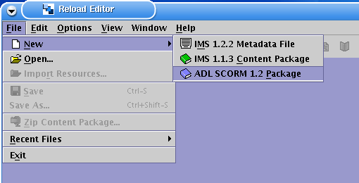
Once selected, Reload will prompt you for a directory where to put your course. I suggest you select a new blank directory as shown in the pic.
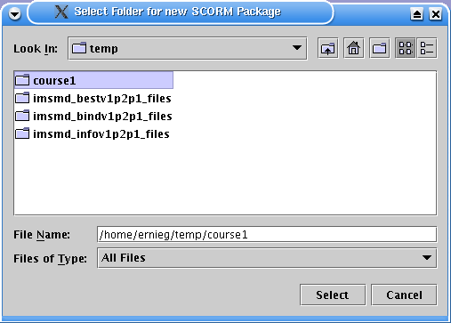
Create Metadata for your Course!
Creating basic metadata for your course is critical and a requirement as this information will later be used to determine your package structure as well as the provide information about your course. To do so, you can right-click on the manifest tag and select "Add Metadata"...
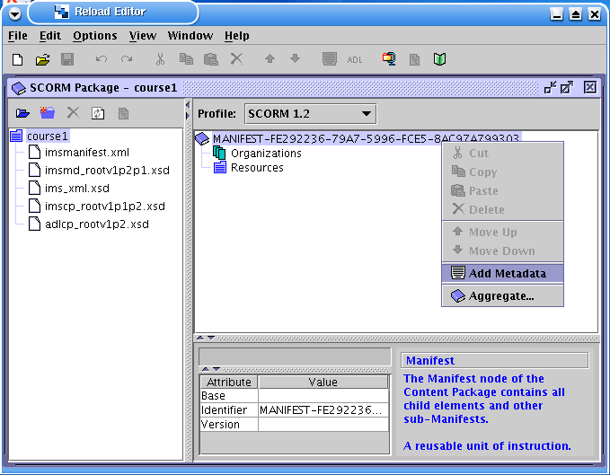
But before you go about creating the metadata for your course, you need to provide the Metadata schema and version you will use. Since we are using SCORM packaging, we simply don't have to as there is only one choice. But if we would be using another metadata set, we would be prompt with choices.
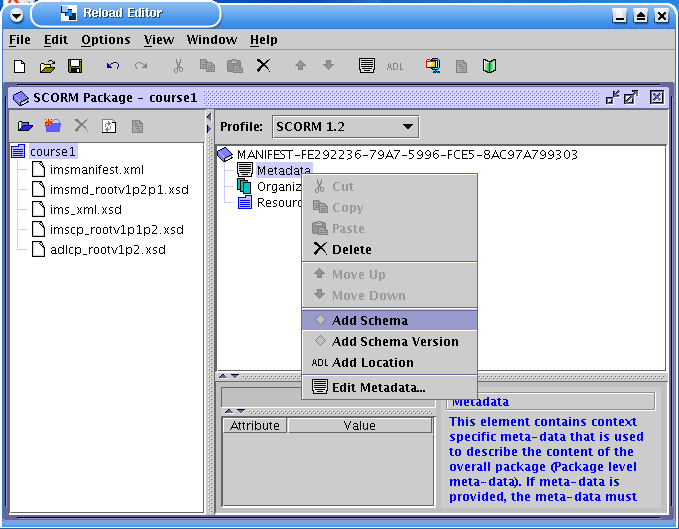
Same goes for the Metadata schema version:
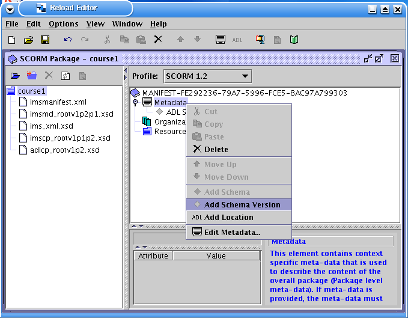
Once we added the schema and the version, let's add the course metadata using the Reload's excellent metadata editor:
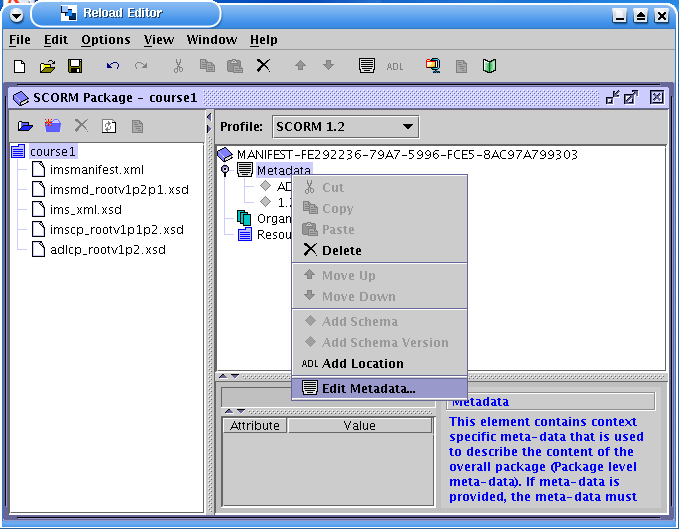
At bare minimum, add a title for your course. But the more information you can provide about your course, better you make your resources to be findable and, therefore, reusable!. If you have questions about what each of these fields mean, you can have a look at IMS Metadata specifications.
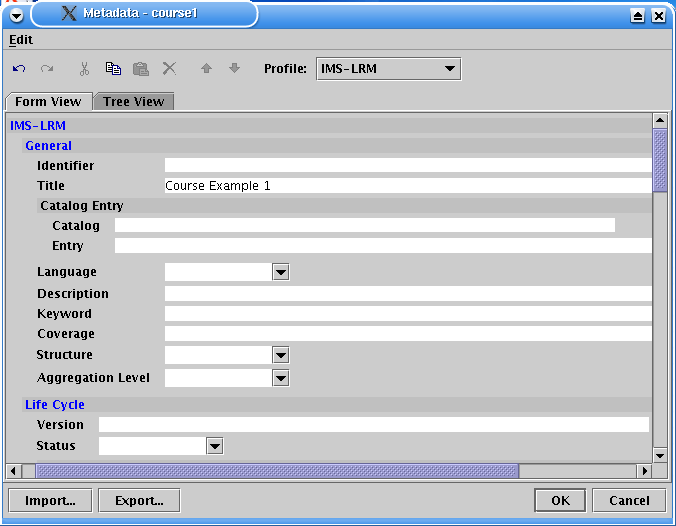
Add Organizations
Now, let's add some organizations. Usually, unless you know why you want to have multiple organization, it is better to stick to one and only one organization. But again, it is upto you how you want to organize your course. Reload allows you to add multiple organizations and LORS also permits their use as well. So, if you are passionate about creating a multiple organization course, please go for it. Otherwise, just create one organization
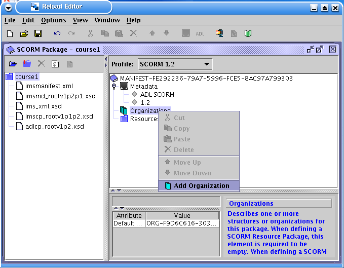
Add Items
Here's where the fun starts... you can use items to create the structure of your course. Say for example you want to structure your clases based on timeline, then you can create items that indicate the concepts to be learned thru the weeks that the course will take. If that is the case, then you can start creating an item and call it "Week 1"...
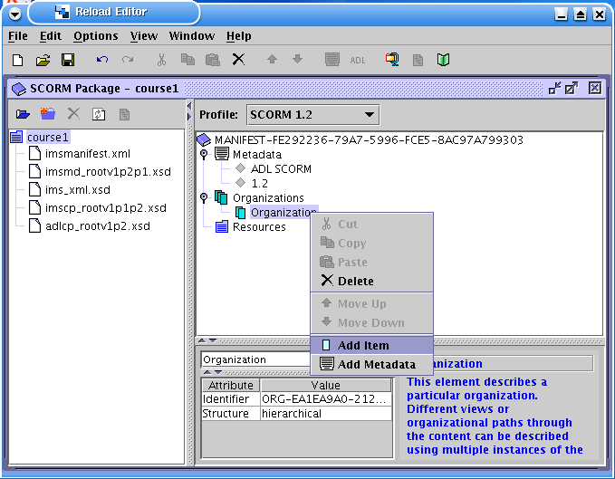
And within the Week1 item you can have subitems specifing the concepts or units of learning to be gain that week.
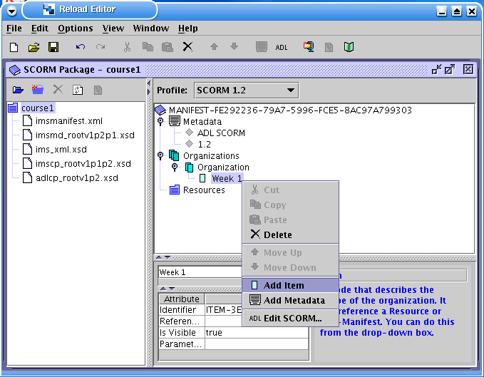
For our example, we have two subitems for Week 1: Lecture and Labs. Note that we can create more subitems within this subitems if required.
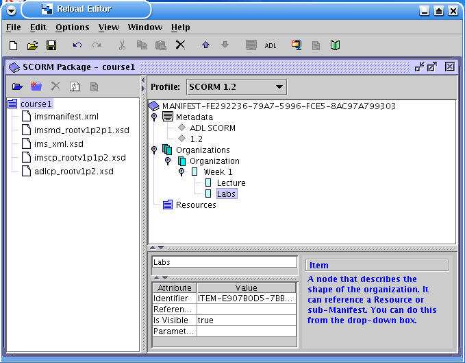
You can keep adding Weeks as you please, as well as subitems. For sake of brevity, we'll continue with our example
Adding Resources
Ok, so now we have the structure of our course, but we need to link that structure to content (the actual files that explain those concepts in the structure). For this, Reload also offers a very cool feature to import your content files all at once. Click on "File" and then proceed to "Import Resources"...
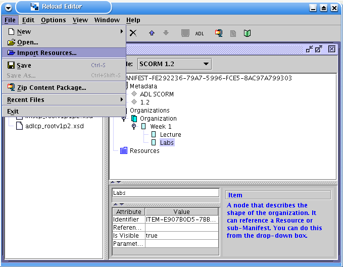
An select the folder where all your resources are... and Reload will add those to the folder where the course is being created.
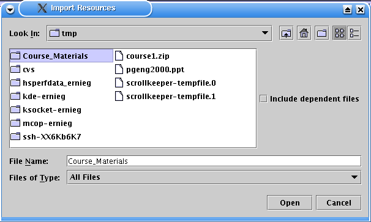
Take into account that you can do this several times if your resources are scattered around the place.
Now, as you can see, we have added the "Course_Materials" folder to our course. But these have not being added as Resources as yet.
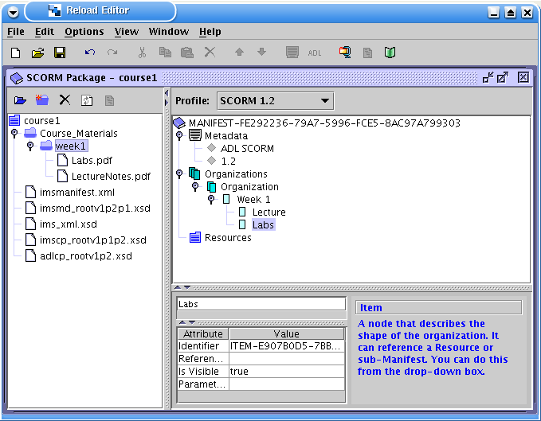
If you just drag-and-drop the week1 folder into the Resources folder on the left box, you will see that Reload automatically links the files in the directory as resources:
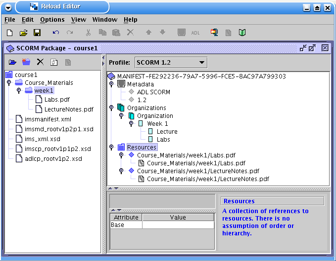
Linking Items to Resources
So to recap, we have added the structure of the course (by adding the items) and also the content files (as resources)... so that's all good, but now we need to link both, so we know which content file represents a unit of study (or lecture, or week, etc).
Hence, let's go back to the items that we created... In this case, we click on the Item "Lecture" and to link it to the resource "Course_Materials/week1/LectureNotes.pdf", we simply click on the Referenced element to select the resource that we need to link it to.
In plain English, we are telling Reload: "Ok, so this 'Lecture' Item has to be referenced to the 'Course_Materials/week1/LectureNotes.pdf' resource"
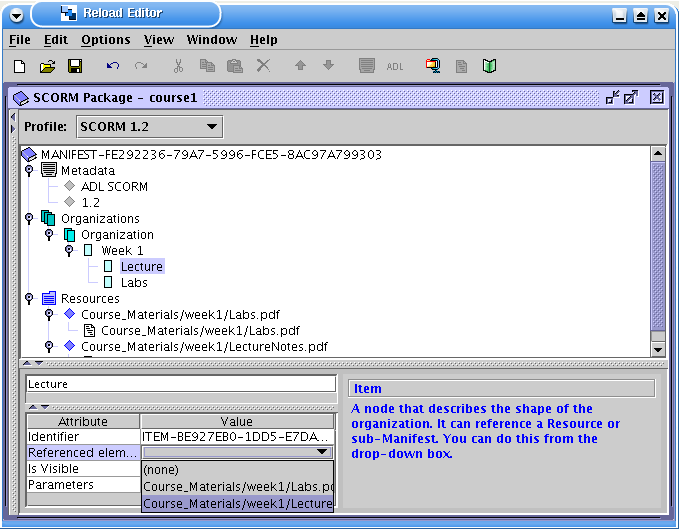
Exporting your Course to a Package
Once we linked all the items we want to link to resources, then we are ready to export all your course structure and content to a single zipped file by clicking on "File" and then "Zip Content Package".!
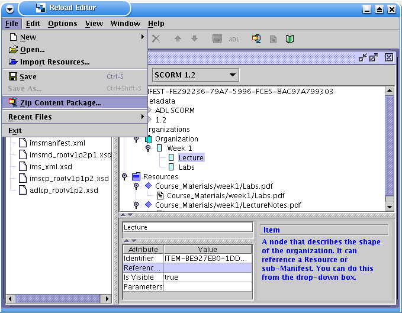
Choose the name of the file and location to be saved and...
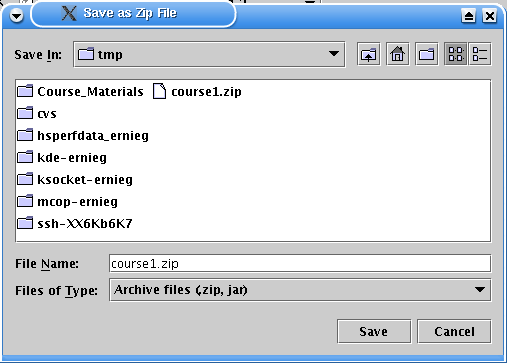
Voila... you have yourself a course
|